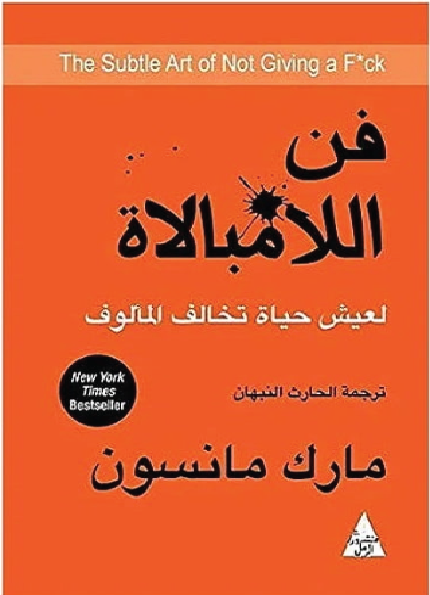

كتاب "فن اللامبالاة: لعيش حياة تخالف المألوف" (The Subtle Art of Not Giving a F*ck) هو كتاب تنمية ذاتية من تأليف مارك مانسون، نُشر لأول مرة عام 2016. يُعد من أكثر الكتب مبيعًا عالميًا، وقد تُرجم إلى العديد من اللغات، من بينها العربية
تعريف موجز:
كتاب "فن اللامبالاة" هو دعوة صريحة للتخلي عن الإيجابية الزائفة والتركيز على ما هو فعلاً مهم في الحياة. يقدّم المؤلف رؤية واقعية ومباشرة حول السعادة، النجاح، والمعاناة، ويشجع القارئ على تقبّل الألم، الفشل، والقيود البشرية بدلًا من إنكارها أو الهروب منها.
أفكار محورية في الكتاب:
لن تهتم بكل شيء، ولا يجب أن تهتم بكل شيء.
المعاناة جزء لا يتجزأ من الحياة، وما تختاره لتُعاني من أجله هو ما يحدد نوعية حياتك.
تحمّل المسؤولية عن قراراتك ومشاعرك حتى لو لم تكن كل الظروف بيدك.
الرفض والتحديد هما مفتاح الحرية؛ عندما تقول "لا" لأشياء كثيرة، تترك مساحة حقيقية لما يهمك.
القيم الجيدة مقابل القيم السيئة: السعادة تنبع من تبني قيم واقعية ومستدامة، كالصراحة، المسؤولية، والتواضع.
أسلوب الكتاب:
يُعرف مانسون بأسلوبه الصادم أحيانًا، والساخر، المليء بالأمثلة الواقعية والحِكم غير التقليدية. هو لا يقدم حلولًا سحرية، بل يواجه القارئ بالحقيقة: الحياة صعبة، ولكنك لست مضطرًا لجعل كل شيء يعني لك شيئًا.